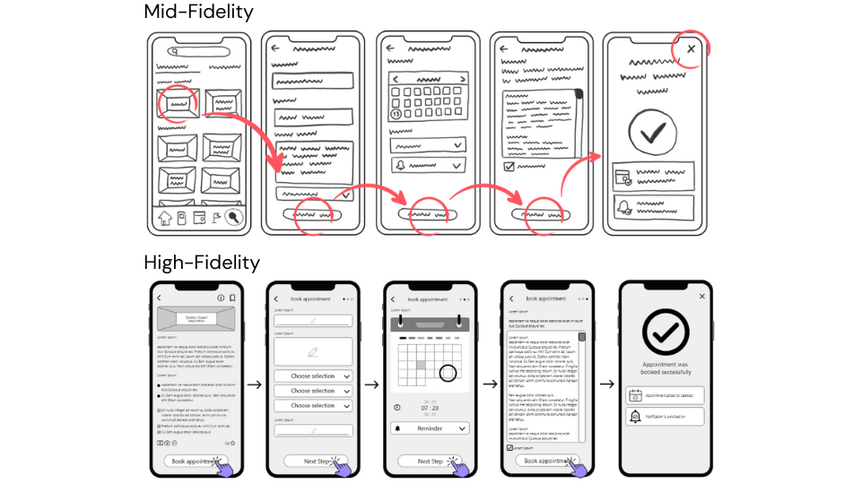
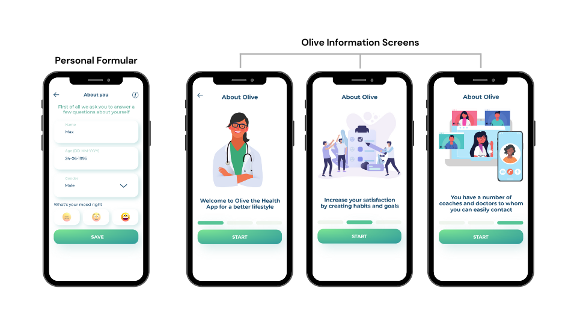
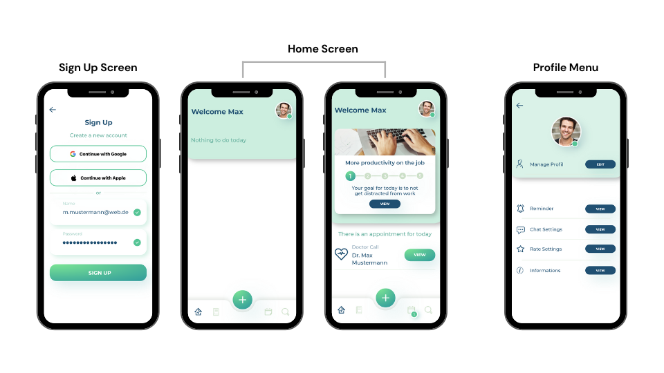
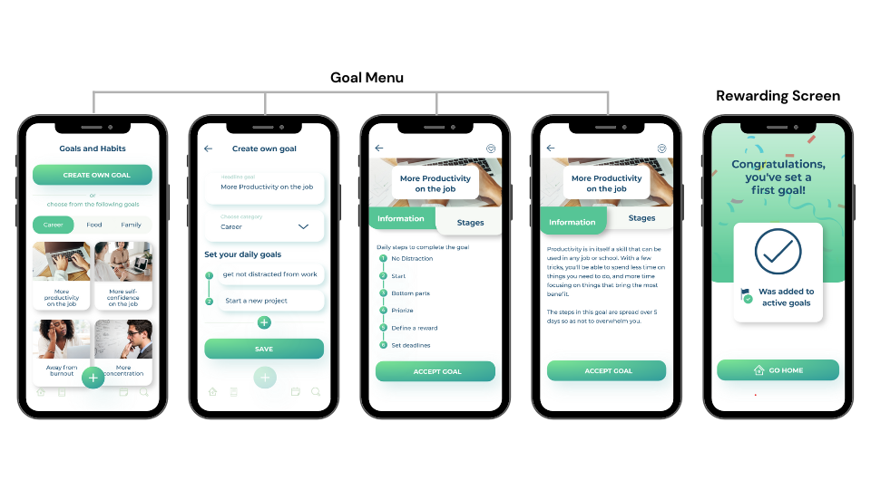
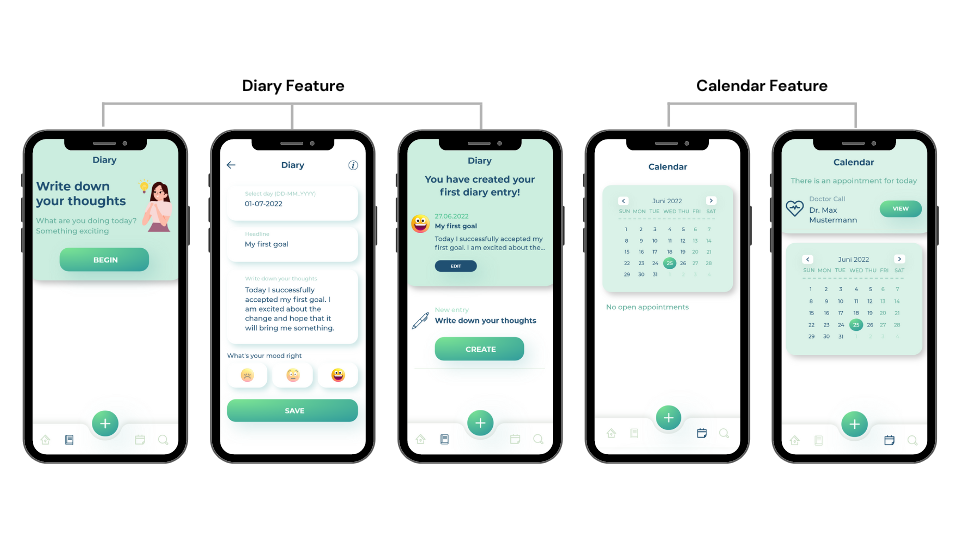
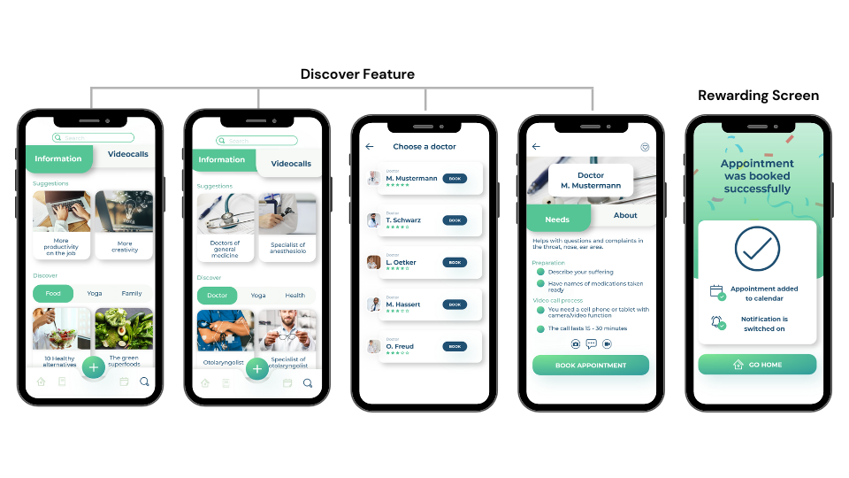
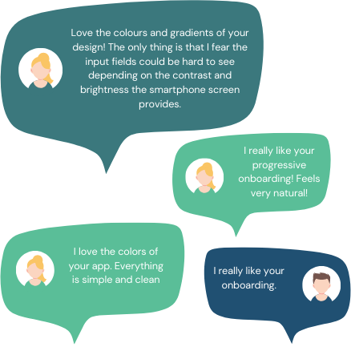

Olive project
Project Overview
OLIVE is a responsive health app. In addition to being able to set goals and new habits to improve lifestyle, users should also be able to have live video calls with coaches or doctors to improve their health.
Problem Statements
Especially people who are exposed toa lot of stress in their professional or private life need a way to acquire a better lifestyle with new goals and habits.
Solution
The Olive app offers users the ability to easily monitor their core motivations such as losing weight, staying physically active, or learning about an acute illness and adopt a better lifestyle.
Programms
- Adobe XD
- Figma
- Optimal Sort
- Usability Hub
My Role
- UX Researcher
- UX Designer
- UI Designer
Timeline
- Overall: 20+ weeks
- Discovery and Research: 12+ weeks
- Design and testing: 8 weeks
User Research
I started with the competitive analysis and analyzed similar apps on the market in more detail. These provided me with a lot of useful insights into the features, structure and design solutions of the apps. Then I wrote user stories and job stories to make sure that my features are based on what the users want.
Interviews
To further explore the problem area, I conducted 4 Skype interviews with users from the target audience and used Affinity Mapping to organize the data and capture the results
Research objectives
- determining the wants and needs that led them to download a health or fitness app.
- deeper understanding of how users learn about health and fitness, and what motivates them and plays a role in doing so.
- understanding how users feel when they succeed in integrating new habits into their daily lives and achieving their set goals.
Concept
User Personas
The use of qualitative and quantitative research methods proved to be an excellent means of identifying the characteristic needs and goals of the user group I was targeting.
This helped me to put myself in the shoes of my target group and create two user personas: Mark and Jenny
Ideation
User Journeys
After gathering all the necessary information about the users and understanding their needs, I created a user flow
- Task:search for goals against burnout in the goal setting menu and manage notifications in the profile
- Entry point:open the web app
- Success Criteria:Goal(s) accepted and notifications enabled.
Wireframes and Prototype
After interviewing users and gathering all the information needed to understand the user and their needs, I created a paper prototype at the beginning of the design phase. This helped me sort out my thoughts and get an overall idea of what forms my design could take. As I gained a deeper understanding of the concept, I created medium quality wireframes that I then merged into an initial prototype in Adobe XD/Figma.
Usability Testing
The only way to verify the usefulness of a design or prototype is to test it with real people. For this reason, I conducted a preference test on Usability Hub. This was to find out which design of physician information would resonate better with participants. There were 11 participants in total. Also, basic functions were to be tested:
- Test how easy it is for the new user to log in. Are there any friction points or hesitation in disclosing information?
- Can the user follow the onboarding information and set and view their first new destination?
- How easy is it to book a call with a doctor? Are all the options given that the user wants?
- Does the user understand how to keep the booked appointment with the doctor?
Final Screens and Mockups
    Comments
There were many comments in general about my OLIVE prototype. These comments encouraged me in what I was doing and show that I was on the right track with my prototype. After the course was finished, I continued to develop my prototype privately. In Figma I reworked it a bit and added some animations.
